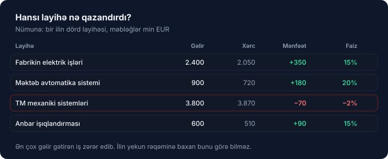
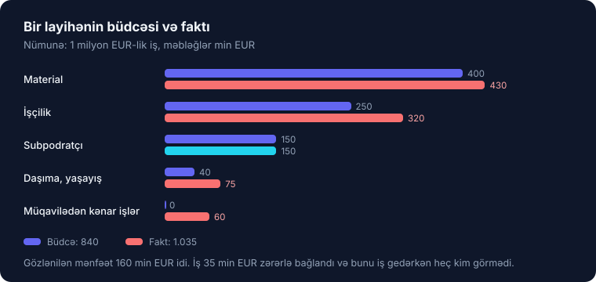

Layihənin gəlirliliyi necə ölçülür? İş bitəndə yox, gedərkən görmək
Layihə əsasında işləyən şirkətlərdə mənfəət çox vaxt ildə bir dəfə bilinir. Mühasib balansı çıxarır və şirkətin həmin il nə qədər qazandığı bəlli olur. Hansı layihənin qazandırdığı, hansının zərər etdiyi isə o cədvəldə görünmür. Bu yazıda layihə gəlirliliyinin niyə ölçülə bilmədiyini və ölçmək üçün nələrin qeydə alınmalı olduğunu izah edirik.

Ümumi mənfəət nəyi gizlədir?
İlin sonunda şirkət mənfəət edibsə, hamı rahatlanır. Halbuki o cəmin içində yaxşı qazandıran işlərlə zərər edən işlər bir-birini bağlamış ola bilər. Aşağıdakı nümunədə şirkət ili mənfəətlə bağlayır, amma ən böyük layihəsi zərər edib.

Bu cədvəli görməyən şirkət gələn il eyni növ böyük işə eyni qiymətlə təklif verir. Hansı iş növünün, hansı müştərinin, hansı komandanın pul qazandırdığını bilmədən böyümək zərər edən işi də böyütmək deməkdir.
Xərc niyə layihəyə yazılmır?
Əksər şirkətlərdə xərcin uçotu aparılır; çatışmayan, xərcin hansı layihəyə aid olmasıdır. Yanacaq qəbzi mühasibata "nəqliyyat xərci" kimi daxil olur. Obyektə yaxın mehmanxananın hesabı "yaşayış xərci" olur. Topdansatışçıdan alınan kabel "material" hesabına yazılır. Hamısı düzgün hesabdadır, amma hansı iş üçün xərcləndiyi itib.
İşçi qüvvəsində vəziyyət daha çətindir. Bir briqada həftə ərzində iki ayrı obyektdə işləyir, maaşı isə ayın sonunda tək sətirlə ödənir. Kimin hansı layihədə neçə gün işlədiyi sualının cavabı tabeldədir, o da varsa.
Bir də fakturası yazılmayan əlavə işlər var. Müştəri obyektdə "bura da bir xətt çəkək" deyir, briqada çəkir. Bu iş müqavilədə yoxdur, heç kim ofisə xəbər vermir, materialı və işçi qüvvəsi layihənin xərcinə düşür, amma fakturası heç vaxt yazılmır.
Ölçmək üçün nə qeydə alınmalıdır?
Layihənin gəlirliliyini görmək üçün mürəkkəb hesablama lazım deyil. Dörd şeyin müntəzəm aparılması kifayətdir.
Layihənin əvvəlində büdcə
Təklifi hazırlayanda onsuz da xərc hesablayırsınız. Həmin hesabı maddə-maddə saxlayın: material, işçi qüvvəsi, subpodratçı, daşıma və yaşayış. İş bitəndə nə ilə müqayisə edəcəyiniz bəlli olsun.
Hər xərcdə layihə kodu
Satınalma sifarişi, xərc qəbzi, subpodratçı fakturası, hansı olursa olsun, daxil edilərkən hansı layihəyə aid olduğu seçilir. Təkcə bu sahə məcburi ediləndə işin yarısı həll olunur.
Kim, hansı layihədə, neçə saat
Gündəlik və ya həftəlik sadə iş qeydi. Briqadir axşam telefondan həmin gün kimlərin hansı obyektdə olduğunu qeyd edir. Dəqiqə dəqiqliyi lazım deyil, yarım gün səviyyəsində məlumat əksər şirkətlər üçün kifayətdir.
Əlavə işlərin ayrıca qeydi
Müqavilədən kənar hər tələb görülməzdən əvvəl qısa qeydlə ofisə bildirilir və müştəri ilə təsdiqlənir. Beləliklə, həm fakturası yazılır, həm də layihənin əsas büdcəsini pozmur.

İş gedərkən görmək
Gəlirliliyi iş bitəndən sonra hesablamaq növbəti təklif üçün faydalıdır. Əsas fayda isə iş davam edərkən görməkdədir. İşçi qüvvəsi büdcəsinin səksən faizi xərclənib, amma işin yarısı qalıbsa, bunu üçüncü həftədə bilməklə təhvildən sonra öyrənmək arasında böyük fərq var.
Erkən görəndə əlinizdə seçim olur. Briqadanı dəyişə, müştəri ilə əlavə işin haqqını danışa, materialda alternativə keçə bilərsiniz. İş bitəndən sonra edilə biləcək tək şey zərəri qəbul etməkdir.
Bunun üçün həftədə bir dəfə baxılan tək bir ekran kifayətdir: hər layihə üzrə büdcə, bu günə qədər xərclənən məbləğ və işin tamamlanma faizi.
Bunu Excel-də edə bilmərikmi?
Bir layihə üçün etmək olar, edən şirkətlər də var. Çətinlik məlumatı toplamaqdadır. Satınalma bir yerdə, xərc qəbzləri başqa yerdə, tabel dəftərdə, fakturalar mühasibat proqramındadır. Kimsə hər həftə hamısını əllə bir cədvələ köçürməlidir. Bu iş adətən ikinci ayda yarımçıq qalır.
Proqramın burada verdiyi fayda hesablamaq yox, məlumatı mənbəyində tutmaqdır. Satınalma sifarişi daxil edilərkən layihə seçilir, xərc qəbzi telefonla çəkilərkən layihə seçilir, iş saatı yazılarkən layihə seçilir. Hesabat üçün ayrıca zəhmət çəkilmir, qeydlər özü layihənin altında toplanır.
Bunu edən alətlər müxtəlifdir: layihə modulu olan ERP sistemləri, layihə uçotu üçün yazılmış xüsusi proqramlar, şirkətə görə hazırlanan həllər. Seçim satınalmanın və mühasibatın hazırda harada aparılmasından asılıdır. Biz mövcud qaydanı pozmadan onun üstünə əlavə etməyə üstünlük veririk.
Tez-tez verilən suallar
Ümumi xərcləri layihələr arasında necə bölək?
Əvvəlcə bölməyin. Qabaqca birbaşa xərcləri (material, işçi qüvvəsi, subpodratçı, daşıma) layihəyə yazın. İcarə, ofis işçiləri kimi xərcləri sonra sadə bir nisbətlə əlavə etmək olar. Təkcə birbaşa xərcləri görmək əksər şirkətlərdə mənzərəni dəyişir.
Mühasibimiz bunu onsuz da etmirmi?
Mühasib rəsmi uçotu aparır və vergi baxımından düzgün olanı edir. Layihə üzrə gəlirlilik qanunla tələb olunmadığı üçün onun işinə daxil deyil. Bu, şirkətin öz idarəçiliyi üçün apardığı uçotdur.
Komanda saat yazmağa müqavimət göstərsə?
Hər kəsin ayrıca yazmasını tələb etməyin. Briqadirin gündə bir dəfə kimin hansı işdə olduğunu qeyd etməsi kifayətdir və buna daha asan öyrəşirlər.
Əlaqəli xidmətlərimiz: mühəndislik və podrat şirkətləri üçün ERP, kiçik və orta biznes üçün ERP həlləri.
İşinizin real mənfəətini hesablayın
Təklif məbləğini və xərcləri daxil edin; görünən mənfəətlə komanda saatı daxil real mənfəəti yan-yana görün.
Kalkulyatoru açHansı işiniz qazandırır?
Bir layihənizin büdcəsini və faktiki xərcini birlikdə çıxaraq.
Layihənizi müzakirə edək